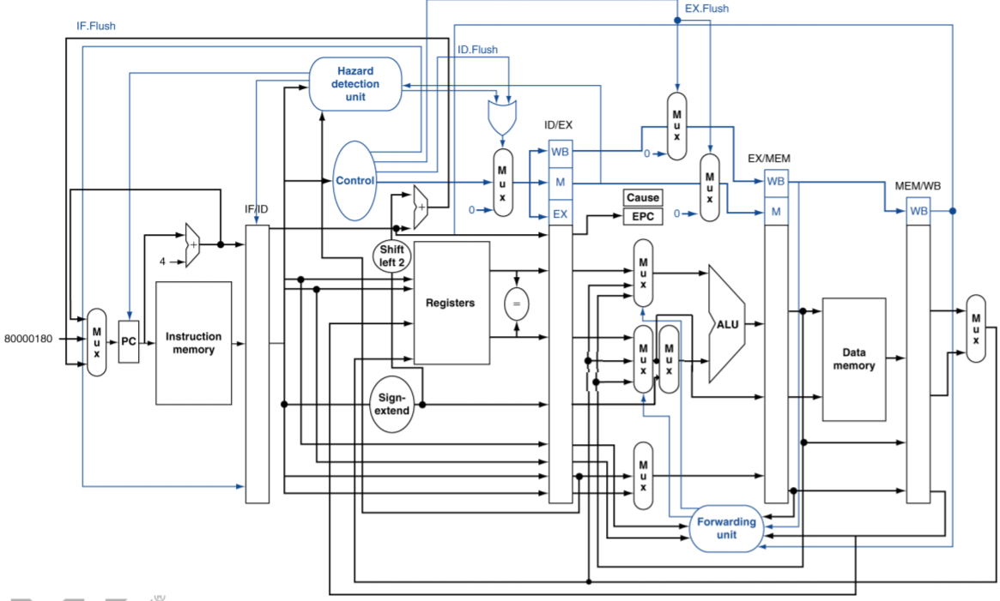
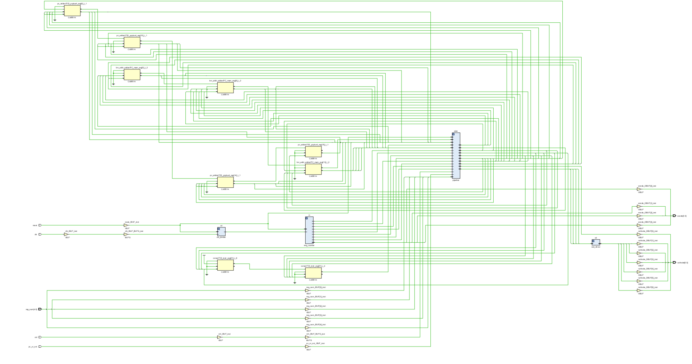
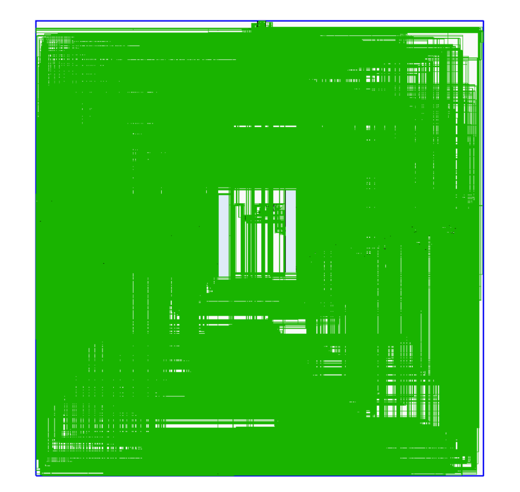

VE370 Intro to Computer Organization
Project 2 Team Report
FA 2020
| Name | Stud. ID |
|---|---|
| Zhou Zhanpeng | 518021910594 |
| Liu Yihua | 518021910998 |
| Shen Yang | 518370910027 |
| Peng Haotian | 518370910107 |
Abstract
In this report, we demonstrate our implementation of a 5-stage pipelined processor based on MIPS instruction set and Verilog HDL modeling. Our project implements a pipelined processor in MIPS architecture with a forwarding unit and two hazard detecting unit to resolve hazard issues. We use Verilog HDL to model the processor and verify our design by Vivado simulation included in this report. Besides, we also demonstrate our design on a FPGA board.
Introduction
In this project, we implement a 5-stage pipelined processor based on MIPS instruction set with a forwarding unit and two hazard detecting unit to resolve hazard issues. MIPS is an open source instruction set architecture with high performance that is widely used in embedded systems. Pipelined processor is implemented by a technique called instruction pipelining that is implemented by dividing instructions into a series of pipelines so that the processor's cycle time is reduced. It is simple, reliable, and fast.
To realize instruction pipelining, we divide the handling of instructions into 5 stages: IF (instruction fetch), ID (instruction decode), EX (execute), MEM (memory access), and (register write back). Between them, we have 4 stage registers: IF/ID register, ID/EX register, EX/MEM register, MEM/WB register. In the first stage, we acquire PC address and instruction from instruction memory; in the second stage, we acquire control signals, do register reading or writing if applicable, and detect hazards; in the third stage, we do ALU (Arithmetic Logic Unit) calculation and forwarding if applicable; in the fourth stage, we read or write data from the data memory; in the fifth stage, we select a write-back signal.
Description
Overview

Basically, our modeling and implementation is following above picture. However, some part is added and some part is deleted due to our specialized design. For example, to support j type instruction, we add an another mux before PC to select the jump target address. Also, EX.flush signal has no usage in our design then we simply remove it.
Next, we will go deeper about how we model the stage register, memory and how to resolve data hazard and control hazard. We will not talk about how to model a mux or comparator in later sections because they are simple to implement.
Stage Register
In pipelined processor, we use four stage registers to process signals: IF/ID, ID/EX, EX/MEM, MEM/WB. The names of wires and registers we use in state registers with their corresponding descriptions are list below.
Specially, the stage register is triggered by rising edge of clock. And for IF/ID & ID/EX, there are two control signal to flush all the content or just control signals passed in to zero.
| Name | Descriptions | |
|---|---|---|
| input | clk | clock signal |
| IFID_write | whether to write IF/ID stage register | |
| IF_flush | whether to flush IF stage | |
| IF_instr | instruction from the instruction memory in IF stage | |
| IF_pcplus4 | the value of PC + 4 in IF stage | |
| output | IFID_instr | instruction output from IF/ID stage register |
| IFID_pcplus4 | the value of PC + 4 output from IF/ID stage register |
Table 1. IF/ID stage register.
| Name | Descriptions | |
|---|---|---|
| input | clk | clock signal |
| IF_flush | whether to flush IF stage | |
| regReadData1ID | registers read data 1 in ID stage | |
| regReadData2ID | registers read data 2 in ID stage | |
| signExtendID | output of sign-extend in ID stage | |
| registerRsID | the value of register rs in ID stage | |
| registerRtID | the value of register rt in ID stage | |
| registerRdID | the value of register rd in ID stage | |
| aluOpID | control signal ALUOp in ID stage | |
| regDstID | control signal RegDst in ID stage | |
| memReadID | control signal MemRead in ID stage | |
| memtoRegID | control signal MemtoReg in ID stage | |
| memWriteID | control signal MemWrite in ID stage | |
| aluSrcID | control signal ALUSrc in ID stage | |
| regWriteID | control signal RegWrite in ID stage | |
| output | regReadData1EX | registers read data 1 in EX stage |
| regReadData2EX | registers read data 2 in EX stage | |
| signExtendEX | output of sign-extend in EX stage | |
| registerRsEX | the value of register rs in EX stage | |
| registerRtEX | the value of register rt in EX stage | |
| registerRdEX | the value of register rd in EX stage | |
| aluOpEX | control signal ALUOp in EX stage | |
| regDstEX | control signal RegDst in EX stage | |
| memReadEX | control signal MemRead in EX stage | |
| memtoRegEX | control signal MemtoReg in EX stage | |
| memWriteEX | control signal MemWrite in EX stage | |
| aluSrcEX | control signal ALUSrc in EX stage | |
| regWriteEX | control signal RegWrite in EX stage |
Table 2. ID/EX stage register.
| Name | Descriptions | |
|---|---|---|
| input | Clock | clock signal |
| EX_MemRead | control signal MemRead in EX stage | |
| EX_MemtoReg | control signal MemtoReg in EX stage | |
| EX_MemWrite | control signal MemWrite in EX stage | |
| EX_RegWrite | control signal RegWrite in EX stage | |
| EX_MUX8_out | the destination register in EX stage | |
| EX_ALU_result | ALU result as an output of ALU in EX stage | |
| EX_MUX6_out | the value of R[rt] in EX stage | |
| output | MEM_MemRead | control signal MemRead in MEM stage |
| MEM_MemtoReg | control signal MemtoReg in MEM stage | |
| MEM_MemWrite | control signal MemWrite in MEM stage | |
| MEM_RegWrite | control signal RegWrite in MEM stage | |
| MEM_MUX8_out | the destination register in MEM stage | |
| MEM_ALU_result | ALU result as an output of ALU in MEM stage | |
| MEM_MUX6_out | the value of R[rt] in MEM stage |
Table 3. EX/MEM stage register.
| Name | Descriptions | |
|---|---|---|
| input | Clock | clock signal |
| MEM_RegWrite | control signal RegWrite in MEM stage | |
| MEM_MemtoReg | control signal MemtoReg in MEM stage | |
| MEM_MUX8_out | the destination register in MEM stage | |
| MEM_Data_memory_Read_data | data memory read data in MEM stage | |
| MEM_ALU_result | ALU result as an output of ALU in MEM stage | |
| output | WB_MemtoReg | control signal MemtoReg in WB stage |
| WB_RegWrite | control signal RegWrite in WB stage | |
| WB_MUX8_out | the destination register in WB stage | |
| WB_Data_memory_Read_data | data memory read data in WB stage | |
| WB_ALU_result | ALU result as an output of ALU in WB stage |
Table 4. MEM/WB stage register.
Memory
The implementation of the memory part includes Data Memory (module data_mem in the source code), Instruction Memory (module Instr_mem in the source code) and Register File (module reg_file in the source file). There are some typical designing details in this project:
The data is byte-addressable. Though this project is based on word addresses, the real memory units supported by MIPS should be byte-addressable. There are some typical MIPS instructions that needs the addresses of byte, such as lb, lbu and lh. Though those instruction are not needed in this project, we still consider this condition in case we could develop more instructions through this project in future.
The data memory and register file are driven by the negative edge of clock in this project. This design may lengthen the critical path, but it could avoid some hazards:
xxxxxxxxxx81always @(negedge clk) begin2if (mem_write) begin3memory[read_addr] write_data[word 1:word byte];4memory[read_addr 1] write_data[word byte 1:word 2byte];5memory[read_addr 2] write_data[word 2byte 1:word 3byte];6memory[read_addr 3] write_data[word 3byte 1:0];7end8endTake a part of the implementation of data memory as an example. If we update data in the positive edge, which is the beginning of a new clock cycle, the value of some variables may stay as the former clock cycle while some already change. If the write data has changed and the address of the write data stays the same, then wrong data will be updated into the write address of the last instruction. With the time of the first half of the clock cycle, this hidden hazard could be solved.
The detailed descriptions of the three memory units are shown below:
Data Memory
Data memory is used to store most data. In this project, due to the restriction of the software, we limit the capacity as 1000 words (4KB). The module of data memory takes 6 variables, including 5 inputs ( read_addr, write_data, mem_write, mem_read, clk) and 1 output (read_data). The module will read or write data through a 32*1000 register called memory. If mem_write = 1, the output variable read_data will be updated with the data stores in read_addr in the memory.
Instruction Memory
Instruction memory is used to stores the MIPS instructions in a program in words. The PC could get the data of an instruction by searching the address of that data. In this project, we limit the capacity of the instruction memory as 42 words, which means it can hold at most 42 instructions. The module of instruction memory takes 2 variables, including 1 input (read_addr) and 1 output (instruction). To simulate a program, the data in the memory is initialized from the file InstructionMem_for_P2_Demo_bonus.txt, which is attached in appendix.
The module will read the read_addr and find the correspond instruction to update in instruction.
Register File
Register file is used to store the data of the 32 most commonly used registers. The order of these registers is shown below:

In this project, the module of data memory takes 8 variables, including 6inputs (read_addr1, read_addr2, write_addr, write_data, regwrite, clk) and 2outputs (read_data1, read_data2). To simplify the process, the data of every register is initialized as 32 bits 0. The write_data will be updated to correspond register at each negative edge. The read_data will be assigned to correspond register whenever the rrad_addr changes (read is asynchronous while write is synchronous).
Control Unit
The control unit is used to generate control signals from different 6 bits opcodes. From the structure of pipeline in VE370 lectures, the control unit should generate 9 outputs as follows:
xxxxxxxxxx31initial begin2 ALUop 2'b00; RegDst 0; Jump 0; Branch 0; MemRead 0; MemtoReg 0; MemWrite 0; ALUSrc 0; RegWrite 0; Beq 0;3endIn this project, to support both beq and bne instructions, we introduce another output called beq. Beq will only be 1 when the instruction is beq. If both branch and beq signals equal to 1 we could determine the instruction as beq. If branch signal equals to 1 while beq signal equal to 0, then the instruction is bne.
ALU Related Modules
This part describes the ALU related modules in the pipelined processor, including the ALUop signal, the ALU control unit and the ALU unit. The processor first produces a 2-bit ALUop signal by the control unit. Then the ALUop signal is processed by the ALU control unit which will output a 4-bit ALU control signal. Finally the ALU unit executes the computation according to the ALU control signal.
ALUOp
ALUop signal is a 2-bit signal, produced by the control unit according to different instruction. ALUop signal is one of the inputs of the ALU control unit, which determines the type of computation of the ALU unit. How ALUop is designed is listed in the table below, together with the output result of the ALU control unit. R-type instructions share the same ALUop signal 10, to further identify different R-type instructions funct code need to be checked later.lw, sw and addi share ALUop of 00. beq and bne share ALUop of 01. andi produces ALUop of 11.
ALU Control Unit
ALU control unit takes two inputs, ALUop and funct, and outputs an 4-bit ALU control signal. The design is in the table below. Notice that actually j type instruction doesn’t need to perform ALU operation, thus, we just randomly picked one ALUop and corresponding ALU control for it.
| Op code | Operation | ALUop | Funct | ALU control | ALU function |
|---|---|---|---|---|---|
| lw (100011) | load word | 00 | xxxxxx | 0010 | add |
| sw (101011) | save word | 00 | xxxxxx | 0010 | add |
| addi (001000) | add immediate | 00 | xxxxxx | 0010 | add |
| beq (000100) | branch if equal | 01 | xxxxxx | 0110 | subtract |
| bne (000101) | branch if not equal | 01 | xxxxxx | 0110 | subtract |
| andi (001100) | and immediate | 11 | xxxxxx | 0000 | and |
| R-type (000000) | add | 10 | 100000 | 0010 | add |
| sub | 10 | 100010 | 0110 | subtract | |
| and | 10 | 100100 | 0000 | and | |
| or | 10 | 100101 | 0001 | or | |
| slt | 10 | 101010 | 0111 | slt | |
| j | jump | 00 | xxxxxx | 0010 | add |
In this project, 12 instructions are to be implemented, including lw, sw, beq, bne, add, sub, AND, OR, slt, addi, andi, j. The funct code of all the I-type instructions doesn’t matter, marked as xxxxxx in the table. For the R-type instructions, different ALU control signals are determined by the funct code.
lw, sw, addi, add require the ALU unit to do add function, so they share an ALU control code of 0010. Likewise, beq, bne, sub require subtract function, output 0110. andi, AND require AND function, output 0000. OR outputs 0001, indicating OR function. slt outputs 0111, indicating slt function.
ALU Unit
The ALU unit takes the ALU control signal from the previous ALU control unit, to determine the type of computation.
| ALU control | ALU function |
|---|---|
| 0000 | and |
| 0001 | or |
| 0010 | add |
| 0110 | subtract |
| 0111 | slt |
Data Hazard
This part describes how data hazards in this pipelined processor are solved. The data hazards that will occur can be categorized into three kinds, R-type data hazard, data hazard on branch, and data hazard on lw.
Forwarding Unit
Data hazard caused by R-type instructions is the simplest and can be solved by a forwarding unit, see the figure below. The unit controls the inputs of the ALU unit to make sure the value of the register being used is updated, if the previous one or two instruction changes the value of Rd (Rd is not $0), and the previous Rd is the Rs or Rt of the current instruction.

The logic of the forwarding unit is as follows: Initially forwardA = 0, forwardB = 0.
For 1&2 hazard:
If (regWrite.MEM && regRdMEM && (regRdMEM == regRsEX)
forwardA = 2’b10
If (regWrite.MEM && regRdMEM && (regRdMEM == regRtEX))
forwardB = 2’b10
For 1&3 hazard (notice that we need to make sure there is no 1&2 hazard):
If (regWrite.WB && regRdWB && (regRdWB == regRsEX) && forwardA != 2’b10)
forwardA = 2’b01
If (regWrite.WB && regRdWB && (regRdWB == regRtEX) && forwardB != 2’b10)
forwardB = 2’b01;
This unit is named as R_forward in Appendix.
Data Hazard on Branch
Since the branch instruction result will be produced by the comparator early in the ID stage, the forwarding unit is not enough to solve the data hazard caused by beq and bne. Here 5 more signals are introduced, forward1, forward2, PCWrite, IFID_write, and ID_flush.
Initially forward1 = 0, forward2 = 0, PCWrite = 1, IFID_write = 1, and ID_flush = 0.
Amongst, forward1 and forward2 are two select signals of muxes, as shown below. If the instruction in the MEM stage writes back to Rd (Rd is not $0), the instruction in ID stage is beq/bne, and Rd of the MEM stage is Rs/Rt in the ID stage, then forward1/forward2 = 1.

Specifically:
xxxxxxxxxx41if (EXMEM_regWrite EXMEM_memRead ID_branch) begin2 if (EXMEM_regRd ID_regRs) forward1 1;3 if (EXMEM_regRd ID_regRt) forward2 1;4endPCWrite, IFID_write, and ID_flush are used to insert stalls.
If the EX stage instruction before beq/bne (currently in the ID stage) writes back to Rd (Rd != $0), and Rd of the EX stage is Rs/Rt in the ID stage, then insert one stall, making PCWrite = 0, IFID_write = 0 and ID_flush = 1.
Else if the MEM stage instruction reads data from the data memory, meaning it will write back to Rd (Rd != $0) in next clock cycle; and the ID stage instruction is beq/bne, and Rd of the MEM stage is Rs/Rt in the ID stage, insert one stall as well.
Specifically:
xxxxxxxxxx101if (IDEX_regWrite ID_branch) begin2 if (EX_regDst ID_regRs EX_regDst ID_regRt) begin3 PCWrite 0; IFID_write 0; ID_flush 1;4 end5end6if (EXMEM_memRead ID_branch) begin7 if (EXMEM_regRd ID_regRs EXMEM_regRd ID_regRt) begin8 PCWrite 0; IFID_write 0; ID_flush 1;9 end10endThis unit is named as brc_hazard in Appendix.
lw Data hazard
The third kind of data hazard is caused by the lw instruction. Different from R-type instructions, the earliest time the lw instruction produces its result is the MEM stage. While forwarding back in time is impossible, a stall after the lw instruction is necessary. Again we use three signals to control stalls, PCWrite, IFID_write, and ID_flush.
Initially PCWrite = 1, IFID_write = 1, and ID_flush = 0.
If the EX stage instruction is lw, and Rd (Rd != $0) of lw is Rs/Rt of the ID stage instruction, insert a stall.
Specifically:
xxxxxxxxxx51if (IDEX_memRead (IFID_regRs IDEX_regRt IFID_regRt IDEX_regRt)) begin2 PCWrite 0;3 ID_flush 1;4 IFID_write 0;5endControl Hazard
Simply, control hazard is resolved by flush the whole instruction and other content in ID/EX stage register. Firstly, based on branch and beq signals generated by control unit, we know if there is a beq instruction in ID stage right now. Then, we will compare the two register’s content, if the comparator gives 1 when beq = 1 or gives 0 when beq = 0, we will simply flush the content in ID/EX stage register right now, this mechanism is called Assume not taken.
However, if control unit gives jump = 1, which means there is a j-type instruction in ID stage, we will directly flush all the content in ID/EX stage register.
Implementation & Simulation Results
RTL Schematic
Based on our design described above, we implement our pipeline processor in vivado which gives the schematic of our design shown as below.
This is the whole picture of our design including pipeline processor and ssd_driver and other thing.

This one is the internal deign of the pipeline processor.

Theoretical Results
In this report, we use InstructionMem_for_P2_Demo_bonus.txt to simulate our pipeline processor. Following is the theoretical results:
| cycle | Instruction | IF | ID | EX | MEM | WB | Results |
|---|---|---|---|---|---|---|---|
| 1 | 1. addi $t0, $zero, 0x20 | 1 | x | x | x | x | |
| 2 | 2. addi $t1, $zero, 0x37 | 2 | 1 | x | x | x | |
| 3 | 3. and $s0, $t0, $t1 | 3 | 2 | 1 | x | x | |
| 4 | 4. or $s0, $t0, $t1 | 4 | 3 | 2 | 1 | x | |
| 5 | 5. sw $s0, 4($zero) | 5 | 4 | 3 | 2 | 1 | $t0 = 0x20 |
| 6 | 6. sw $t0, 8($zero) | 6 | 5 | 4 | 3 | 2 | $t1 = 0x37 |
| 7 | 7. add $s1, $t0, $t1 | 7 | 6 | 5 | 4 | 3 | $s0 = 0x20 |
| 8 | 8. sub $s2, $t0, $t1 | 8 | 7 | 6 | 5 | 4 | $s0 = 0x37; Data.Mem[4] = 0x37 |
| 9 | 9. beq $s1, $s2, error0 | 9 | 8 | 7 | 6 | 5 | Data.Mem[8] = 0x20 |
| 10 | 10. lw $s1, 4($zero) | 10 | 9 | 8 | 7 | 6 | |
| 11 | 10 | 9 | nop | 8 | 7 | $s1 = 0x57 | |
| 12 | 11. andi $s2, $s1, 0x48 | 11 | 10 | 9 | nop | 8 | $s2 = 0xffffffe9 |
| 13 | 12. beq $s1, $s2, error1 | 12 | 11 | 10 | 9 | nop | |
| 14 | 12 | 11 | nop | 10 | 9 | ||
| 15 | 13. lw $s3, 8($zero) | 13 | 12 | 11 | nop | 10 | $s1 = 0x37 |
| 16 | 13 | 12 | nop | 11 | nop | ||
| 17 | 14. beq $s0, $s3, error2 | 14 | 13 | 12 | nop | 11 | $s2 = 0x0 |
| 18 | 15. slt $s4, $s2, $s1 (Last) | 15 | 14 | 13 | 12 | nop | |
| 19 | 15 | 14 | nop | 13 | 12 | ||
| 20 | 15 | 14 | nop | nop | 13 | $s3 = 0x20 | |
| 21 | 16. beq $s4, $0, EXIT | 16 | 15 | 14 | nop | nop | |
| 22 | 17. add $s2, $s1, $0 | 17 | 16 | 15 | 14 | nop | |
| 23 | 17 | 16 | nop | 15 | 14 | ||
| 24 | 18. j Last | 18 | 17 | 16 | nop | 15 | $s4 = 0x1 |
| 25 | 19. addi $t0, $0, 0(error0) | 19 | 18 | 17 | 16 | nop | |
| 26 | 15. slt $s4, $s2, $s1 (Last) | 15 | flush | 18 | 17 | 16 | |
| 27 | 16. beq $s4, $0, EXIT | 16 | 15 | flush | 18 | 17 | $s2 = 0x37 |
| 28 | 17. add s1, $0 | 17 | 16 | 15 | flush | 18 | |
| 29 | 17 | 16 | nop | 15 | flush | ||
| 30 | EXIT | EXIT | flush | 16 | nop | 15 | |
| 31 | EXIT | EXIT | EXIT | flush | 16 | nop | |
| 32 | EXIT | EXIT | EXIT | EXIT | flush | 16 | |
| 33 | EXIT | EXIT | EXIT | EXIT | EXIT | flush |
Textual Simulation Results
Also, we generated the following textual result which shows the content of register at each clock cycle, which concides with the theorectial result.

| cycle | Instruction | IF | ID | EX | MEM | WB | Results |
|---|---|---|---|---|---|---|---|
| 1 | 1. addi $t0, $zero, 0x20 | 1 | x | x | x | x |

| cycle | Instruction | IF | ID | EX | MEM | WB | Results |
|---|---|---|---|---|---|---|---|
| 2 | 2. addi $t1, $zero, 0x37 | 2 | 1 | x | x | x |

| cycle | Instruction | IF | ID | EX | MEM | WB | Results |
|---|---|---|---|---|---|---|---|
| 3 | 3. and $s0, $t0, $t1 | 3 | 2 | 1 | x | x |

| cycle | Instruction | IF | ID | EX | MEM | WB | Results |
|---|---|---|---|---|---|---|---|
| 4 | 4. or $s0, $t0, $t1 | 4 | 3 | 2 | 1 | x |

| cycle | Instruction | IF | ID | EX | MEM | WB | Results |
|---|---|---|---|---|---|---|---|
| 5 | 5. sw $s0, 4($zero) | 5 | 4 | 3 | 2 | 1 | $t0 = 0x20 |

| cycle | Instruction | IF | ID | EX | MEM | WB | Results |
|---|---|---|---|---|---|---|---|
| 6 | 6. sw $t0, 8($zero) | 6 | 5 | 4 | 3 | 2 | $t1 = 0x37 |

| cycle | Instruction | IF | ID | EX | MEM | WB | Results |
|---|---|---|---|---|---|---|---|
| 7 | 7. add $s1, $t0, $t1 | 7 | 6 | 5 | 4 | 3 | $s0 = 0x20 |

| cycle | Instruction | IF | ID | EX | MEM | WB | Results |
|---|---|---|---|---|---|---|---|
| 8 | 8. sub $s2, $t0, $t1 | 8 | 7 | 6 | 5 | 4 | $s0 = 0x37; Data.Mem[4] = 0x37 |

| cycle | Instruction | IF | ID | EX | MEM | WB | Results |
|---|---|---|---|---|---|---|---|
| 9 | 9. beq $s1, $s2, error0 | 9 | 8 | 7 | 6 | 5 | Data.Mem[8] = 0x20 |

| cycle | Instruction | IF | ID | EX | MEM | WB | Results |
|---|---|---|---|---|---|---|---|
| 10 | 10. lw $s1, 4($zero) | 10 | 9 | 8 | 7 | 6 |

| cycle | Instruction | IF | ID | EX | MEM | WB | Results |
|---|---|---|---|---|---|---|---|
| 11 | 10 | 9 | nop | 8 | 7 | $s1 = 0x57 |

| cycle | Instruction | IF | ID | EX | MEM | WB | Results |
|---|---|---|---|---|---|---|---|
| 12 | 11. andi $s2, $s1, 0x48 | 11 | 10 | 9 | nop | 8 | $s2 = 0xffffffe9 |

| cycle | Instruction | IF | ID | EX | MEM | WB | Results |
|---|---|---|---|---|---|---|---|
| 13 | 12. beq $s1, $s2, error1 | 12 | 11 | 10 | 9 | nop |

| cycle | Instruction | IF | ID | EX | MEM | WB | Results |
|---|---|---|---|---|---|---|---|
| 14 | 12 | 11 | nop | 10 | 9 |

| cycle | Instruction | IF | ID | EX | MEM | WB | Results |
|---|---|---|---|---|---|---|---|
| 15 | 13. lw $s3, 8($zero) | 13 | 12 | 11 | nop | 10 | $s1 = 0x37 |

| cycle | Instruction | IF | ID | EX | MEM | WB | Results |
|---|---|---|---|---|---|---|---|
| 16 | 13 | 12 | nop | 11 | nop |

| cycle | Instruction | IF | ID | EX | MEM | WB | Results |
|---|---|---|---|---|---|---|---|
| 17 | 14. beq $s0, $s3, error2 | 14 | 13 | 12 | nop | 11 | $s2 = 0x0 |

| cycle | Instruction | IF | ID | EX | MEM | WB | Results |
|---|---|---|---|---|---|---|---|
| 18 | 15. slt $s4, $s2, $s1 (Last) | 15 | 14 | 13 | 12 | nop |

| cycle | Instruction | IF | ID | EX | MEM | WB | Results |
|---|---|---|---|---|---|---|---|
| 19 | 15 | 14 | nop | 13 | 12 |

| cycle | Instruction | IF | ID | EX | MEM | WB | Results |
|---|---|---|---|---|---|---|---|
| 20 | 15 | 14 | nop | nop | 13 | $s3 = 0x20 |

| cycle | Instruction | IF | ID | EX | MEM | WB | Results |
|---|---|---|---|---|---|---|---|
| 21 | 16. beq $s4, $0, EXIT | 16 | 15 | 14 | nop | nop |

| cycle | Instruction | IF | ID | EX | MEM | WB | Results |
|---|---|---|---|---|---|---|---|
| 22 | 17. add $s2, $s1, $0 | 17 | 16 | 15 | 14 | nop |

| cycle | Instruction | IF | ID | EX | MEM | WB | Results |
|---|---|---|---|---|---|---|---|
| 23 | 17 | 16 | nop | 15 | 14 |

| cycle | Instruction | IF | ID | EX | MEM | WB | Results |
|---|---|---|---|---|---|---|---|
| 24 | 18. j Last | 18 | 17 | 16 | nop | 15 | $s4 = 0x1 |

| cycle | Instruction | IF | ID | EX | MEM | WB | Results |
|---|---|---|---|---|---|---|---|
| 25 | 19. addi $t0, $0, 0(error0) | 19 | 18 | 17 | 16 | nop |

| cycle | Instruction | IF | ID | EX | MEM | WB | Results |
|---|---|---|---|---|---|---|---|
| 26 | 15. slt $s4, $s2, $s1 (Last) | 15 | flush | 18 | 17 | 16 |

| cycle | Instruction | IF | ID | EX | MEM | WB | Results |
|---|---|---|---|---|---|---|---|
| 27 | 16. beq $s4, $0, EXIT | 16 | 15 | flush | 18 | 17 | $s2 = 0x37 |

| cycle | Instruction | IF | ID | EX | MEM | WB | Results |
|---|---|---|---|---|---|---|---|
| 28 | 17. add s1, $0 | 17 | 16 | 15 | flush | 18 |

| cycle | Instruction | IF | ID | EX | MEM | WB | Results |
|---|---|---|---|---|---|---|---|
| 29 | 17 | 16 | nop | 15 | flush |
Conclusion & Discussion
In this project, we developed a 32-bit pipelined MIPS processor in Verilog. We simulate the program in Vivado and implemented it on FPGA board. Beyond the lw hazard and forwarding unit, we also resolved beq related hazards. In general, the program went smooth, but there are still some concerns:
- To avoid hazards as much as possible, we update the data in the memory on negative edge of the clock, which may lengthen the critical path and impact the performance.
- When consider the control hazards, we only introduce IF. Flush. Without considering ID. Flush and EX. Flush, we couldn’t solve control hazards ahead of ID stage.
The performance of the program can be improved by introducing more instructions (there are lw, sw, add, addi, sub, and, andi, or, slt, beq, bne and j now), extend the capacity of data memory and instruction memory, and reducing the critical path, to list a few. These improvements may need more stages and more complicated hazard detection unit, which could be implemented in the future.
Reference
[1] Zheng, G., 2020. Ve370 Introduction To Computer Organization Project 2.
Appendix
Source Code
ALU.v
x1`timescale 1ns 1ps234module ALU(result, a, b, ALU_control);5 parameter word 32;6 input [word 1:0] a, b;7 input [3:0] ALU_control;8 output [word 1:0] result;9 10 reg [word 1:0] result;11 12 initial begin13 result 0;14 end15 16 always @(a or b or ALU_control) begin17 case (ALU_control)18 // add19 4'b0010: result a b;20 // sub21 4'b0110: result a b;22 // and23 4'b0000: result a b;24 // or25 4'b0001: result a b;26 // slt27 4'b0111: result (a < b)1:0;28 default: result 0;29 endcase30 end31endmoduleALU_control.v
xxxxxxxxxx321`timescale 1ns 1ps23module ALUcontrol(ALU_control, funct, ALU_op);4 input [1:0] ALU_op;5 input [5:0] funct;6 output [3:0] ALU_control;7 8 reg [3:0] ALU_control;9 10 initial begin11 ALU_control 0;12 end13 14 always @ (funct or ALU_op) begin15 case (ALU_op)16 2'b00: ALU_control 4'b0010;17 2'b01: ALU_control 4'b0110;18 2'b11: ALU_control 4'b0000;19 2'b10: begin20 case (funct)21 6'b100000: ALU_control 4'b0010;22 6'b100010: ALU_control 4'b0110;23 6'b100101: ALU_control 4'b0001;24 6'b101010: ALU_control 4'b0111;25 6'b100100: ALU_control 4'b0000; 26 default: ALU_control 4'b0000;27 endcase28 end29 default: ALU_control < 4'b0000;30 endcase31 end32endmoduleEX_MEM.v
xxxxxxxxxx341module EX_MEM (MEM_MemRead, MEM_MemtoReg, MEM_MemWrite, MEM_RegWrite, MEM_ALU_result, MEM_MUX6_out, MEM_MUX8_out,2 Clock, EX_MemRead, EX_MemtoReg, EX_MemWrite, EX_RegWrite, EX_ALU_result, EX_MUX6_out, EX_MUX8_out);3 parameter rwidth 5;4 parameter word 32;5 input Clock, EX_MemRead, EX_MemtoReg, EX_MemWrite, EX_RegWrite;6 input [rwidth 1:0] EX_MUX8_out; 7 input [word 1:0] EX_ALU_result, EX_MUX6_out;8 output MEM_MemRead, MEM_MemtoReg, MEM_MemWrite, MEM_RegWrite;9 output [rwidth 1:0] MEM_MUX8_out;10 output [word 1:0] MEM_ALU_result, MEM_MUX6_out;11 reg MEM_MemRead, MEM_MemtoReg, MEM_MemWrite, MEM_RegWrite;12 reg [rwidth 1:0] MEM_MUX8_out;13 reg [word 1:0] MEM_ALU_result, MEM_MUX6_out;1415 initial begin16 MEM_MemRead < 0;17 MEM_MemtoReg < 0;18 MEM_MemWrite < 0;19 MEM_RegWrite < 0;20 MEM_ALU_result < 0;21 MEM_MUX6_out < 0;22 MEM_MUX8_out < 0;23 end2425 always @ (posedge Clock) begin26 MEM_MemRead < EX_MemRead;27 MEM_MemtoReg < EX_MemtoReg;28 MEM_MemWrite < EX_MemWrite;29 MEM_RegWrite < EX_RegWrite;30 MEM_ALU_result < EX_ALU_result;31 MEM_MUX6_out < EX_MUX6_out;32 MEM_MUX8_out < EX_MUX8_out;33 end34endmoduleID_EX.v
xxxxxxxxxx651module ID_EX(EX_RegDst, EX_MemRead, EX_MemtoReg, EX_ALUOp, EX_MemWrite, EX_ALUSrc, 2 EX_RegWrite, EX_Registers_Read_data_1, EX_Registers_Read_data_2, 3 EX_Sign_extend_out, ID_EX_RegisterRs, ID_EX_RegisterRt, ID_EX_RegisterRd, 4 Clock, ID_EX_Flush, ID_RegDst, ID_MemRead, ID_MemtoReg, ID_ALUOp, 5 ID_MemWrite, ID_ALUSrc, ID_RegWrite, ID_Registers_Read_data_1, 6 ID_Registers_Read_data_2, ID_Sign_extend_out, IF_ID_RegisterRs, IF_ID_RegisterRt, IF_ID_RegisterRd);7 parameter sel 2; // sel means the width of ALUOp8 parameter rwidth 5; // rwidth means the width of the a register number9 parameter word 32;10 input Clock, ID_EX_Flush, ID_RegDst, ID_MemRead, ID_MemtoReg, ID_MemWrite, ID_ALUSrc, ID_RegWrite;11 input [sel 1:0] ID_ALUOp;12 input [rwidth 1:0] IF_ID_RegisterRs, IF_ID_RegisterRt, IF_ID_RegisterRd;13 input [word 1:0] ID_Registers_Read_data_1, ID_Registers_Read_data_2, ID_Sign_extend_out;14 output EX_RegDst, EX_MemRead, EX_MemtoReg, EX_MemWrite, EX_ALUSrc, EX_RegWrite;15 output [sel 1:0] EX_ALUOp;16 output [rwidth 1:0] ID_EX_RegisterRs, ID_EX_RegisterRt, ID_EX_RegisterRd;17 output [word 1:0] EX_Registers_Read_data_1, EX_Registers_Read_data_2, EX_Sign_extend_out;18 reg EX_RegDst, EX_MemRead, EX_MemtoReg, EX_MemWrite, EX_ALUSrc, EX_RegWrite;19 reg [sel 1:0] EX_ALUOp;20 reg [rwidth 1:0] ID_EX_RegisterRs, ID_EX_RegisterRt, ID_EX_RegisterRd;21 reg [word 1:0] EX_Registers_Read_data_1, EX_Registers_Read_data_2, EX_Sign_extend_out;2223 initial begin24 EX_RegDst < 0;25 EX_MemRead < 0;26 EX_MemtoReg < 0;27 EX_ALUOp < 0;28 EX_MemWrite < 0;29 EX_ALUSrc < 0;30 EX_RegWrite < 0;31 EX_Registers_Read_data_1 < 0;32 EX_Registers_Read_data_2 < 0;33 EX_Sign_extend_out < 0;34 ID_EX_RegisterRs < 0;35 ID_EX_RegisterRt < 0;36 ID_EX_RegisterRd < 0;37 end3839 always @ (posedge Clock) begin40 if (ID_EX_Flush 1'b1) begin41 EX_RegDst < 0;42 EX_MemRead < 0;43 EX_MemtoReg < 0;44 EX_ALUOp < 0;45 EX_MemWrite < 0;46 EX_ALUSrc < 0;47 EX_RegWrite < 0;48 end49 else begin50 EX_RegDst < ID_RegDst;51 EX_MemRead < ID_MemRead;52 EX_MemtoReg < ID_MemtoReg;53 EX_ALUOp < ID_ALUOp;54 EX_MemWrite < ID_MemWrite;55 EX_ALUSrc < ID_ALUSrc;56 EX_RegWrite < ID_RegWrite;57 end58 EX_Registers_Read_data_1 < ID_Registers_Read_data_1;59 EX_Registers_Read_data_2 < ID_Registers_Read_data_2;60 EX_Sign_extend_out < ID_Sign_extend_out;61 ID_EX_RegisterRs < IF_ID_RegisterRs;62 ID_EX_RegisterRt < IF_ID_RegisterRt;63 ID_EX_RegisterRd < IF_ID_RegisterRd;64 end65endmoduleIF_ID.v
xxxxxxxxxx271`timescale 1ns 1ps23module IF_ID(IFID_pcplus4, IFID_instr, IF_pcplus4, IF_instr, IF_flush, IFID_write, clk);4 parameter word 32;56 input [word 1:0] IF_pcplus4, IF_instr;7 input IF_flush, IFID_write, clk;8 output [word 1:0] IFID_pcplus4, IFID_instr;9 10 reg [word 1:0] IFID_pcplus4, IFID_instr;1112 initial begin13 IFID_instr < 0;14 IFID_pcplus4 < 0;15 end1617 always @(posedge clk) begin18 if (IF_flush) begin19 IFID_pcplus4 < 0;20 IFID_instr < 0;21 end22 else if (IFID_write) begin23 IFID_pcplus4 < IF_pcplus4;24 IFID_instr < IF_instr;25 end 26 end27endmoduleMEM_WB.v
xxxxxxxxxx301module MEM_WB (WB_MemtoReg, WB_RegWrite, WB_Data_memory_Read_data, WB_ALU_result, WB_MUX8_out,2 Clock, MEM_RegWrite, MEM_MemtoReg, MEM_Data_memory_Read_data, MEM_ALU_result, MEM_MUX8_out);3 parameter rwidth 5;4 parameter word 32;5 input Clock, MEM_RegWrite, MEM_MemtoReg;6 input [rwidth 1:0] MEM_MUX8_out;7 input [word 1:0] MEM_Data_memory_Read_data, MEM_ALU_result;8 output WB_MemtoReg, WB_RegWrite;9 output [rwidth 1:0] WB_MUX8_out;10 output [word 1:0] WB_Data_memory_Read_data, WB_ALU_result;11 reg WB_MemtoReg, WB_RegWrite;12 reg [rwidth 1:0] WB_MUX8_out;13 reg [word 1:0] WB_Data_memory_Read_data, WB_ALU_result;1415 initial begin16 WB_MemtoReg < 0;17 WB_RegWrite < 0;18 WB_Data_memory_Read_data < 0;19 WB_ALU_result < 0;20 WB_MUX8_out < 0;21 end2223 always @ (posedge Clock) begin24 WB_MemtoReg < MEM_MemtoReg;25 WB_RegWrite < MEM_RegWrite;26 WB_Data_memory_Read_data < MEM_Data_memory_Read_data;27 WB_ALU_result < MEM_ALU_result;28 WB_MUX8_out < MEM_MUX8_out;29 end30endmodulePC.v
xxxxxxxxxx251`timescale 1ns 1ps23module PC(curr, clk, next, PCWrite, reset);4 parameter word 32;5 6 input [word 1:0] next;7 input clk, PCWrite, reset;8 output [word 1:0] curr;9 10 reg [word 1:0] PC_mem;11 1213 always @(posedge clk or posedge reset) begin14 if (reset 1'b1) begin15 PC_mem 0;16 end17 else begin18 if (PCWrite) begin19 PC_mem next;20 end21 end22 end 23 24 assign curr PC_mem;25endmoduleR_forward.v
xxxxxxxxxx241`timescale 1ns 1ps23module R_forward(forward_A, forward_B, EXMEM_regWrite, MEMWB_regWrite, EXMEM_regRd, MEMWB_regRd, IDEX_regRs, IDEX_regRt, clk);4 input EXMEM_regWrite, MEMWB_regWrite, clk;5 input [4:0] EXMEM_regRd, MEMWB_regRd, IDEX_regRs, IDEX_regRt;6 output [1:0] forward_A, forward_B;7 reg [1:0] forward_A, forward_B;8 9 initial begin10 forward_A 0;11 forward_B 0;12 end1314 always @(negedge clk) begin15 // 1 & 2 hazard16 forward_A[1] EXMEM_regWrite (EXMEM_regRd 0) (EXMEM_regRd IDEX_regRs);17 forward_B[1] EXMEM_regWrite (EXMEM_regRd 0) (EXMEM_regRd IDEX_regRt);18 19 // 1 & 3 hazard (need to make sure no 1 & 2 hazard)20 forward_A[0] MEMWB_regWrite (MEMWB_regRd 0) (MEMWB_regRd IDEX_regRs) ((EXMEM_regWrite EXMEM_regRd (EXMEM_regRd IDEX_regRs)));21 forward_B[0] MEMWB_regWrite (MEMWB_regRd 0) (MEMWB_regRd IDEX_regRt) ((EXMEM_regWrite EXMEM_regRd (EXMEM_regRd IDEX_regRt)));22 end2324endmoduleadder.v
xxxxxxxxxx181`timescale 1ns 1ps23module adder(result, a, b);4 parameter word 32;56 input [word 1:0] a, b;7 output [word 1:0] result;8 9 reg [word 1:0] result;10 11 initial begin12 result 0;13 end14 15 always @(a, b) begin16 result a b;17 end18endmodulebrc_hazard.v
xxxxxxxxxx331`timescale 1ns 1ps23module brc_hazard(forward1, forward2, PCWrite, IFID_write, ID_flush, 4 ID_branch, IDEX_regWrite, EXMEM_regWrite, EXMEM_memRead, EX_regDst, EXMEM_regRd, ID_regRt, ID_regRs, clk);5 input ID_branch, IDEX_regWrite, EXMEM_regWrite, EXMEM_memRead, clk;6 input [4:0] EX_regDst, EXMEM_regRd, ID_regRt, ID_regRs;7 output forward1, forward2, PCWrite, IFID_write, ID_flush;89 reg forward1, forward2, PCWrite, IFID_write, ID_flush;1011 initial begin12 forward1 0; forward2 0; PCWrite 1; IFID_write 1; ID_flush 0;13 end1415 always @(negedge clk) begin16 forward1 0; forward2 0; PCWrite 1; IFID_write 1; ID_flush 0;17 if (IDEX_regWrite ID_branch) begin18 if (EX_regDst ID_regRs EX_regDst ID_regRt) begin19 PCWrite 0; IFID_write 0; ID_flush 1;20 end21 end22 if (EXMEM_regWrite EXMEM_memRead ID_branch) begin23 if (EXMEM_regRd ID_regRs) forward1 1;24 if (EXMEM_regRd ID_regRt) forward2 1;25 end26 if (EXMEM_memRead ID_branch) begin27 if (EXMEM_regRd ID_regRs EXMEM_regRd ID_regRt) begin28 PCWrite 0; IFID_write 0; ID_flush 1;29 end30 end31 end3233endmodule //brc_hazardclk_divider.v
xxxxxxxxxx151`timescale 1ns 1ps23module clk_divider(gate, clk, reset);4 input clk, reset;5 output gate;6 reg [19:0] Q;7 8 assign gate (Q[5:0]) (Q[10:7]) Q[13] Q[16] Q[19]; 9 10 always @ (posedge reset or posedge clk) begin11 if (reset 1'b1) Q < 0;12 else if (gate 1'b1) Q < 0;13 else Q < Q 1;14 end15endmodulecomparator.v
xxxxxxxxxx181`timescale 1ns 1ps23module comparator (equal, a, b);4 parameter word 32;5 input [word 1:0] a, b;6 output equal;78 reg equal;910 initial begin11 equal 1'b0;12 end13 always @(a or b) begin14 if (a b) equal 1'b1;15 else equal 1'b0;16 end1718endmodule //comparatorcontrol.v
xxxxxxxxxx621`timescale 1ns 1ps23module control(RegDst, Jump, Branch, MemRead, MemtoReg, ALUop, MemWrite, ALUSrc, RegWrite, Beq, op);4 input [5:0] op;5 output RegDst, Jump, Branch, MemRead, MemtoReg, MemWrite, ALUSrc, RegWrite, Beq;6 output [1:0] ALUop;78 reg RegDst, Jump, Branch, MemRead, MemtoReg, MemWrite, ALUSrc, RegWrite, Beq;9 reg [1:0] ALUop;10 11 initial begin12 ALUop 2'b00; RegDst 0; Jump 0; Branch 0; MemRead 0; MemtoReg 0; MemWrite 0; ALUSrc 0; RegWrite 0; Beq 0;13 end1415 always @(op) begin16 case (op)17 // lw18 6'b100011: begin19 ALUop 2'b00; RegDst 0; Jump 0; Branch 0; MemRead 1; MemtoReg 1; MemWrite 0; ALUSrc 1; RegWrite 1; Beq 0;20 end2122 // sw23 6'b101011: begin24 ALUop 2'b00; RegDst 0; Jump 0; Branch 0; MemRead 0; MemtoReg 0; MemWrite 1; ALUSrc 1; RegWrite 0; Beq 0;25 end2627 // R-type28 6'b000000: begin29 ALUop 2'b10; RegDst 1; Jump 0; Branch 0; MemRead 0; MemtoReg 0; MemWrite 0; ALUSrc 0; RegWrite 1; Beq 0;30 end3132 // addi33 6'b001000: begin34 ALUop 2'b00; RegDst 0; Jump 0; Branch 0; MemRead 0; MemtoReg 0; MemWrite 0; ALUSrc 1; RegWrite 1; Beq 0;35 end3637 // andi38 6'b001100: begin39 ALUop 2'b11; RegDst 0; Jump 0; Branch 0; MemRead 0; MemtoReg 0; MemWrite 0; ALUSrc 1; RegWrite 1; Beq 0;40 end4142 // beq43 6'b000100: begin44 ALUop 2'b01; RegDst 0; Jump 0; Branch 1; MemRead 0; MemtoReg 0; MemWrite 0; ALUSrc 0; RegWrite 0; Beq 1;45 end4647 // bne48 6'b000101: begin49 ALUop 2'b01; RegDst 0; Jump 0; Branch 1; MemRead 0; MemtoReg 0; MemWrite 0; ALUSrc 0; RegWrite 0; Beq 0;50 end5152 // j53 6'b000010: begin54 ALUop 2'b00; RegDst 0; Jump 1; Branch 0; MemRead 0; MemtoReg 0; MemWrite 0; ALUSrc 0; RegWrite 0; Beq 0;55 end56 57 default: begin58 ALUop 2'b00; RegDst 0; Jump 0; Branch 0; MemRead 0; MemtoReg 0; MemWrite 0; ALUSrc 0; RegWrite 0; Beq 0;59 end60 endcase61 end62endmoduledata_mem.v
xxxxxxxxxx371`timescale 1ns 1ps23module data_mem(read_data, read_addr, write_data, mem_write, mem_read, clk, reset);4 parameter word 32;5 parameter byte 8;6 parameter number 1000;7 8 input [word 1:0] read_addr, write_data;9 input mem_write, mem_read, clk, reset;10 output [word 1:0] read_data;11 12 reg [byte 1:0] memory[number 1:0];13 reg [word 1:0] read_data;1415 integer n;16 17 always @(negedge clk or posedge reset) begin18 if (reset 1'b1) begin19 for (n 0; n < number; n n 1) begin20 memory[n] 0;21 end22 end23 else if (mem_write) begin24 memory[read_addr] write_data[word 1:word byte];25 memory[read_addr 1] write_data[word byte 1:word 2byte];26 memory[read_addr 2] write_data[word 2byte 1:word 3byte];27 memory[read_addr 3] write_data[word 3byte 1:0];28 end29 end30 31 always @() begin32 read_data 'bz;33 if (mem_read) begin34 read_data {memory[read_addr], memory[read_addr1], memory[read_addr2], memory[read_addr3]};35 end 36 end37endmoduledemo.v
xxxxxxxxxx241`timescale 1ns 1ps23module demo(anode, cathode, reset, ctrl, reg_num, pc_or_not, clk);4 input reset, ctrl, pc_or_not, clk;5 input [4:0] reg_num;6 output [3:0] anode;7 output [6:0] cathode;8 9 wire div_clk;10 clk_divider cd(div_clk, clk, reset);11 12 ring_counter rc(anode, div_clk, reset);13 14 wire [15:0] data;15 pipeline pipe(data, ctrl, reset, reg_num, pc_or_not);16 17 wire [3:0] digit;18 tri_buffer tb0(digit, data[15:12], anode[0]);19 tri_buffer tb1(digit, data[11:8], anode[1]);20 tri_buffer tb2(digit, data[7:4], anode[2]);21 tri_buffer tb3(digit, data[3:0], anode[3]);22 23 ssd_driver sd(cathode, digit);24endmoduleinstr_mem.v
xxxxxxxxxx551`timescale 1ns 1ps23module instr_mem(instruction, read_addr);4 parameter word 32;5 parameter byte 8;6 parameter line 42;7 8 input [word 1:0] read_addr;9 output [word 1:0] instruction;10 11 reg [byte 1:0] mem[4line 1:0];12 reg [word 1:0] instruction;13 integer n;14 15 initial begin16 for (n 0; n < 4line; n n 1) begin17 mem[n] 0;18 end19 { mem[0], mem[1], mem[2], mem[3] } 32'b00100000000010000000000000100000; // 120 { mem[4], mem[5], mem[6], mem[7] } 32'b00100000000010010000000000110111; // 221 { mem[8], mem[9], mem[10], mem[11] } 32'b00000001000010011000000000100100; // 322 { mem[12], mem[13], mem[14], mem[15] } 32'b00000001000010011000000000100101; // 423 { mem[16], mem[17], mem[18], mem[19] } 32'b10101100000100000000000000000100; // 524 { mem[20], mem[21], mem[22], mem[23] } 32'b10101100000010000000000000001000; // 625 { mem[24], mem[25], mem[26], mem[27] } 32'b00000001000010011000100000100000; // 726 { mem[28], mem[29], mem[30], mem[31] } 32'b00000001000010011001000000100010; // 827 { mem[32], mem[33], mem[34], mem[35] } 32'b00010010001100100000000000001001; // 928 { mem[36], mem[37], mem[38], mem[39] } 32'b10001100000100010000000000000100; // 1029 { mem[40], mem[41], mem[42], mem[43] } 32'b10001100000100110000000000001000; // 1330 { mem[44], mem[45], mem[46], mem[47] } 32'b00110010001100100000000001001000; // 1131 { mem[48], mem[49], mem[50], mem[51] } 32'b00010010001100100000000000001001; // 1232 { mem[52], mem[53], mem[54], mem[55] } 32'b00010010000100110000000000001010; // 1433 { mem[56], mem[57], mem[58], mem[59] } 32'b00000010010100011010000000101010; // 1534 { mem[60], mem[61], mem[62], mem[63] } 32'b00010010100000000000000000001111; // 1635 { mem[64], mem[65], mem[66], mem[67] } 32'b00000010001000001001000000100000; // 1736 { mem[68], mem[69], mem[70], mem[71] } 32'b00001000000000000000000000001110; // 1837 { mem[72], mem[73], mem[74], mem[75] } 32'b00100000000010000000000000000000; // 1938 { mem[76], mem[77], mem[78], mem[79] } 32'b00100000000010010000000000000000; // 2039 { mem[80], mem[81], mem[82], mem[83] } 32'b00001000000000000000000000011111; // 2140 { mem[84], mem[85], mem[86], mem[87] } 32'b00100000000010000000000000000001; // 2241 { mem[88], mem[89], mem[90], mem[91] } 32'b00100000000010010000000000000001; // 2342 { mem[92], mem[93], mem[94], mem[95] } 32'b00001000000000000000000000011111; // 2443 { mem[96], mem[97], mem[98], mem[99] } 32'b00100000000010000000000000000010; // 2544 { mem[100], mem[101], mem[102], mem[103] } 32'b00100000000010010000000000000010; // 2645 { mem[104], mem[105], mem[106], mem[107] } 32'b00001000000000000000000000011111; // 2746 { mem[108], mem[109], mem[110], mem[111] } 32'b00100000000010000000000000000011; // 2847 { mem[112], mem[113], mem[114], mem[115] } 32'b00100000000010010000000000000011; // 2948 { mem[116], mem[117], mem[118], mem[119] } 32'b00001000000000000000000000011111; // 3049 // $readmemb("D:/JI/2020 fall/VE370 Intro to Computer Organization/Projects/P2/InstructionMem_for_P2_Demo_bonus.txt", mem);50 end51 52 always @(read_addr) begin53 instruction {mem[read_addr], mem[read_addr1], mem[read_addr2], mem[read_addr3]};54 end55endmodulelw_hazard.v
xxxxxxxxxx261`timescale 1ns 1ps23module lw_hazard (PCWrite, IFID_write, ID_flush, IDEX_memRead, IFID_regRs, IFID_regRt, IDEX_regRt, clk);4 input [4:0] IFID_regRs, IFID_regRt, IDEX_regRt;5 input IDEX_memRead, clk;6 output PCWrite, IFID_write, ID_flush;78 reg PCWrite, IFID_write, ID_flush;910 initial begin11 PCWrite 1;12 ID_flush 0;13 IFID_write 1;14 end15 16 always @(negedge clk) begin17 PCWrite 1;18 ID_flush 0;19 IFID_write 1;20 if (IDEX_memRead (IFID_regRs IDEX_regRt IFID_regRt IDEX_regRt)) begin21 PCWrite 0;22 ID_flush 1;23 IFID_write 0;24 end25 end26endmodule //lw_hazardmux_by_2.v
xxxxxxxxxx231`timescale 1ns 1ps23module mux_by_2(F, sel, A, B);4 parameter N 32;5 6 input sel;7 input [N1 : 0] A, B;8 output [N1 : 0] F; 9 10 reg [N1 : 0] F;1112 initial begin13 F 0;14 end15 16 always @ (A, B, sel) begin17 case (sel)18 1'b0 : F A;19 1'b1 : F B;20 default : F 0;21 endcase22 end23endmodulemux_by_3.v
xxxxxxxxxx251`timescale 1ns 1ps23module mux_by_3(F, sel, A, B, C);4 parameter N 32;5 6 input [1:0] sel;7 input [N1 : 0] A, B, C;8 output [N1 : 0] F; 9 10 reg [N1 : 0] F;1112 initial begin13 F 0;14 end15 16 always @ (A, B, sel) begin17 case (sel)18 2'b00 : F A;19 2'b01 : F B;20 2'b10 : F C;21 2'b11 : F C;22 default : F 0;23 endcase24 end25endmodulepipeline.v
xxxxxxxxxx1241`timescale 1ns 1ps23module pipeline (data, clk, reset, reg_num, pc_or_not);4 parameter word 32;5 parameter half_w 16;67 input clk, reset, pc_or_not;8 input [4:0] reg_num;9 output [half_w 1:0] data; 1011 // output12 wire [word 1:0] full_data, tmp_reg, curr;13 14 assign full_data pc_or_notcurr:tmp_reg;15 assign data full_data[half_w 1:0];1617 // IF stage18 wire [word 1:0] next, IF_pcplus4, IF_instr, jump_target;19 wire [word 1:0] brc_target, not_jump_target;20 wire PCWrite, ID_real_brc, ID_jump, IF_flush;2122 PC pc(curr, clk, next, PCWrite, reset);23 adder pc_adder(IF_pcplus4, curr, 4);24 mux_by_2 brc_mux(not_jump_target, ID_real_brc, IF_pcplus4, brc_target);25 mux_by_2 jmp_mux(next, ID_jump, not_jump_target, jump_target);26 instr_mem instrmem(IF_instr, curr);27 assign IF_flush ID_real_brc ID_jump;2829 // IF/ID stage register30 wire [word 1:0] IFID_pcplus4, IFID_instr;31 wire IFID_write;3233 IF_ID ifid(IFID_pcplus4, IFID_instr, IF_pcplus4, IF_instr, IF_flush, IFID_write, clk);3435 // ID stage36 wire ID_regDs, ID_branch, ID_memRead, ID_beq;37 wire ID_memtoReg, ID_memWrite, ID_ALUSrc, ID_regWrite, ID_brc_part;38 wire MEMWB_memtoReg, MEMWB_regWrite, reg_equal, forward1, forward2;39 wire [1:0] ID_ALUop;40 wire [4:0] MEMWB_regRd;41 wire [word 1:0] ID_read_data1, ID_read_data2, ID_reg_data1, ID_reg_data2, ext_imt;42 wire [word 1:0] sh_ext_imt;43 wire [word 1:0] EXMEM_ALU_result, EXMEM_val_regRt, WB_write_data;44 wire [27:0] jump_part;4546 control ctrl(ID_regDst, ID_jump, ID_branch, ID_memRead, ID_memtoReg, ID_ALUop, ID_memWrite, ID_ALUSrc, ID_regWrite, ID_beq, IFID_instr[31:26]);47 reg_file regfile(tmp_reg, ID_read_data1, ID_read_data2, IFID_instr[25:21], IFID_instr[20:16], MEMWB_regRd, WB_write_data, MEMWB_regWrite, clk, reset, reg_num);48 mux_by_2 read_data_mux1(ID_reg_data1, forward1, ID_read_data1, EXMEM_ALU_result); 49 mux_by_2 read_data_mux2(ID_reg_data2, forward2, ID_read_data2, EXMEM_ALU_result);50 comparator comp(reg_equal, ID_reg_data1, ID_reg_data2);51 sign_ext extended(ext_imt, IFID_instr[15:0]);52 shifter_1 sh1(jump_part, IFID_instr[25:0]);53 assign jump_target {IFID_pcplus4[31:28], jump_part};54 shifter_2 sh2(sh_ext_imt, ext_imt);55 adder brc_addr_adder(brc_target, sh_ext_imt, IFID_pcplus4);56 mux_by_2 #1 beqOrbne(ID_brc_part, ID_beq, reg_equal, reg_equal);57 assign ID_real_brc ID_brc_part ID_branch;5859 // ID/EX stage register60 wire [word 1:0] IDEX_ext_imt, IDEX_reg_data1, IDEX_reg_data2;61 wire [4:0] IDEX_regRs, IDEX_regRt, IDEX_regRd;62 wire IDEX_regDst, IDEX_memRead, IDEX_memtoReg, IDEX_memWrite;63 wire IDEX_ALUSrc, IDEX_regWrite, ID_flush;64 wire [1:0] IDEX_ALUOp;6566 ID_EX idex(IDEX_regDst, IDEX_memRead, IDEX_memtoReg, IDEX_ALUOp, IDEX_memWrite, IDEX_ALUSrc, 67 IDEX_regWrite, IDEX_reg_data1, IDEX_reg_data2, IDEX_ext_imt, IDEX_regRs, IDEX_regRt, IDEX_regRd, 68 clk, ID_flush, ID_regDst, ID_memRead, ID_memtoReg, ID_ALUop, ID_memWrite, ID_ALUSrc, 69 ID_regWrite, ID_reg_data1, ID_reg_data2, ext_imt, IFID_instr[25:21], IFID_instr[20:16], IFID_instr[15:11]);7071 // EX stage72 wire [word 1:0] ALU_operand1, ALU_operand2, ALU_operand2_part;73 wire [4:0] EX_regDst;74 wire [word 1:0] EX_ALU_result;75 wire [3:0] ALU_control;76 wire [1:0] forwardA, forwardB;7778 mux_by_2 #5 regDst_mux(EX_regDst, IDEX_regDst, IDEX_regRt, IDEX_regRd);79 mux_by_3 ALU_mux1(ALU_operand1, forwardA, IDEX_reg_data1, WB_write_data, EXMEM_ALU_result);80 mux_by_3 ALU_mux2(ALU_operand2_part, forwardB, IDEX_reg_data2, WB_write_data, EXMEM_ALU_result);81 mux_by_2 ALU_mux3(ALU_operand2, IDEX_ALUSrc, ALU_operand2_part, IDEX_ext_imt);82 ALUcontrol alu_ctrl(ALU_control, IDEX_ext_imt[5:0], IDEX_ALUOp);83 ALU alu_com(EX_ALU_result, ALU_operand1, ALU_operand2, ALU_control);8485 // EX/MEM stage register86 wire [4:0] EXMEM_regRd; 87 wire EXMEM_memRead, EXMEM_memtoReg, EXMEM_memWrite, EXMEM_regWrite;8889 EX_MEM exmem(EXMEM_memRead, EXMEM_memtoReg, EXMEM_memWrite, EXMEM_regWrite, EXMEM_ALU_result, EXMEM_val_regRt, EXMEM_regRd,90 clk, IDEX_memRead, IDEX_memtoReg, IDEX_memWrite, IDEX_regWrite, EX_ALU_result, ALU_operand2_part, EX_regDst);9192 // MEM stage93 wire [word 1:0] MEM_read_mem;9495 data_mem datamem(MEM_read_mem, EXMEM_ALU_result, EXMEM_val_regRt, EXMEM_memWrite, EXMEM_memRead, clk, reset);9697 // MEM/WB stage register98 wire [word 1:0] MEMWB_ALU_result, MEMWB_read_mem;99100 MEM_WB memwb(MEMWB_memtoReg, MEMWB_regWrite, MEMWB_read_mem, MEMWB_ALU_result, MEMWB_regRd,101 clk, EXMEM_regWrite, EXMEM_memtoReg, MEM_read_mem, EXMEM_ALU_result, EXMEM_regRd);102103 // WB stage104 mux_by_2 mem2reg(WB_write_data, MEMWB_memtoReg, MEMWB_ALU_result, MEMWB_read_mem);105106 // branch hazard detection107 wire PCWrite1, IFID_write1;108 wire ID_flush1;109110 brc_hazard brc_hazard_detect(forward1, forward2, PCWrite1, IFID_write1, ID_flush1, 111 ID_branch, IDEX_regWrite, EXMEM_regWrite, EXMEM_memRead, EX_regDst, EXMEM_regRd, IFID_instr[20:16], IFID_instr[25:21], clk);112113 // lw hazard detection114 wire PCWrite2, IFID_write2, ID_flush2;115116 lw_hazard lw_hazard_detect(PCWrite2, IFID_write2, ID_flush2, IDEX_memRead, IFID_instr[25:21], IFID_instr[20:16], IDEX_regRt, clk);117118 assign PCWrite PCWrite1 PCWrite2;119 assign IFID_write IFID_write1 IFID_write2;120 assign ID_flush ID_flush1 ID_flush2;121122 // R-type forwarding123 R_forward forwarding(forwardA, forwardB, EXMEM_regWrite, MEMWB_regWrite, EXMEM_regRd, MEMWB_regRd, IDEX_regRs, IDEX_regRt, clk);124endmodule //pipelineports.xdc
xxxxxxxxxx411set_property IOSTANDARD LVCMOS33 [get_ports {anode[3]}]2set_property IOSTANDARD LVCMOS33 [get_ports {anode[2]}]3set_property IOSTANDARD LVCMOS33 [get_ports {anode[1]}]4set_property IOSTANDARD LVCMOS33 [get_ports {anode[0]}]5set_property IOSTANDARD LVCMOS33 [get_ports {cathode[6]}]6set_property IOSTANDARD LVCMOS33 [get_ports {cathode[5]}]7set_property IOSTANDARD LVCMOS33 [get_ports {cathode[4]}]8set_property IOSTANDARD LVCMOS33 [get_ports {cathode[3]}]9set_property IOSTANDARD LVCMOS33 [get_ports {cathode[2]}]10set_property IOSTANDARD LVCMOS33 [get_ports {cathode[1]}]11set_property IOSTANDARD LVCMOS33 [get_ports {cathode[0]}]12set_property IOSTANDARD LVCMOS33 [get_ports {reg_num[4]}]13set_property IOSTANDARD LVCMOS33 [get_ports {reg_num[3]}]14set_property IOSTANDARD LVCMOS33 [get_ports {reg_num[2]}]15set_property IOSTANDARD LVCMOS33 [get_ports {reg_num[1]}]16set_property IOSTANDARD LVCMOS33 [get_ports {reg_num[0]}]17set_property PACKAGE_PIN U4 [get_ports {anode[2]}]18set_property PACKAGE_PIN V4 [get_ports {anode[1]}]19set_property PACKAGE_PIN W4 [get_ports {anode[0]}]20set_property PACKAGE_PIN U2 [get_ports {anode[3]}]21set_property PACKAGE_PIN W7 [get_ports {cathode[6]}]22set_property PACKAGE_PIN W6 [get_ports {cathode[5]}]23set_property PACKAGE_PIN U8 [get_ports {cathode[4]}]24set_property PACKAGE_PIN V8 [get_ports {cathode[3]}]25set_property PACKAGE_PIN U5 [get_ports {cathode[2]}]26set_property PACKAGE_PIN V5 [get_ports {cathode[1]}]27set_property PACKAGE_PIN U7 [get_ports {cathode[0]}]28set_property PACKAGE_PIN W15 [get_ports {reg_num[4]}]29set_property PACKAGE_PIN W17 [get_ports {reg_num[3]}]30set_property PACKAGE_PIN W16 [get_ports {reg_num[2]}]31set_property PACKAGE_PIN V17 [get_ports {reg_num[0]}]32set_property PACKAGE_PIN V16 [get_ports {reg_num[1]}]33set_property IOSTANDARD LVCMOS33 [get_ports clk]34set_property IOSTANDARD LVCMOS33 [get_ports pc_or_not]35set_property IOSTANDARD LVCMOS33 [get_ports ctrl]36set_property IOSTANDARD LVCMOS33 [get_ports reset]37set_property PACKAGE_PIN W5 [get_ports clk]38set_property PACKAGE_PIN V15 [get_ports pc_or_not]39set_property PACKAGE_PIN W14 [get_ports ctrl]40set_property PACKAGE_PIN U18 [get_ports reset]41set_property CLOCK_DEDICATED_ROUTE FALSE [get_nets ctrl_IBUF]reg_file.v
xxxxxxxxxx291`timescale 1ns 1ps23module reg_file(reg_tmp, read_data1, read_data2, read_addr1, read_addr2, write_addr, write_data, regwrite, clk, reset, reg_num);4 parameter addr_size 5;5 parameter word 32;6 7 input [addr_size 1:0] read_addr1, read_addr2, write_addr, reg_num;8 input [word 1:0] write_data;9 input regwrite, clk, reset;10 output [word 1:0] read_data1, read_data2, reg_tmp;11 12 reg [word 1:0] reg_mem[2addr_size 1:0];13 integer n;1415 always @(negedge clk or posedge reset) begin16 if (reset 1'b1) begin17 for (n 0; n < 2addr_size; n n 1) begin18 reg_mem[n] 0;19 end20 end21 else if (regwrite 1'b1) begin22 reg_mem[write_addr] write_data;23 end24 end25 26 assign read_data1 reg_mem[read_addr1];27 assign read_data2 reg_mem[read_addr2];28 assign reg_tmp reg_mem[reg_num];29endmodulering_counter.v
xxxxxxxxxx471`timescale 1ns 1ps23module ring_counter(Q, clk, reset);4 input clk, reset;5 output [3:0] Q;6 7 wire CE, load;8 assign CE 1'b1;9 assign load 1'b0;10 wire [1:0] D;11 12 counter_4_bit #2 bit_2(D, clk, reset, load, CE);13 14 decoder_2_to_4 deco(D, Q);15endmodule161718module counter_4_bit(Q, clk, reset, load, CE);19 parameter N 4;20 input clk, reset, load, CE;21 output [N 1:0] Q;22 23 reg [N 1:0] Q;24 25 always @ (posedge clk or posedge reset) begin26 if (reset 1'b1) Q < 0;27 else if (load 1'b1) Q < 0;28 else if (CE 1'b1) Q < Q 1;29 else Q < Q;30 end31endmodule3233module decoder_2_to_4(I, D);34 input [1:0] I;35 output [3:0] D;36 37 reg [3:0] D;38 always @ (I) begin39 case(I)40 2'b00: D < 4'b1110;41 2'b01: D < 4'b1101;42 2'b10: D < 4'b1011;43 2'b11: D < 4'b0111;44 default: D < 4'b1111;45 endcase46 end47endmoduleshifter_1.v
xxxxxxxxxx121`timescale 1ns 1ps23module shifter_1(out, in);4 parameter in_size 26;5 parameter by 2;6 7 input [in_size 1:0] in;8 output [in_size 1 by:0] out;9 10 assign out[in_size 1by:by] in;11 assign out[by 1:0] 0;12endmoduleshifter_2.v
xxxxxxxxxx121`timescale 1ns 1ps23module shifter_2(out, in);4 parameter word 32;5 parameter by 2;6 7 input [word 1:0] in;8 output [word 1:0] out;9 10 assign out[word 1:by] in[word 1 by:0];11 assign out[by 1:0] 0;12endmodulesign_ext.v
xxxxxxxxxx111`timescale 1ns 1ps23module sign_ext(out, in);4 parameter word 32;5 parameter half_word 16;6 7 input [half_word 1:0] in;8 output [word 1:0] out;9 10 assign out {{half_word{in[half_word1]}}, in};11endmodulessd_driver.v
xxxxxxxxxx301`timescale 1ns 1ps23module ssd_driver(cathode, Q);4 input [3:0] Q;5 output [6:0] cathode;6 7 reg [6:0] cathode;8 9 always @ (Q) begin10 case(Q)11 4'b0000: cathode < 7'b0000001;12 4'b0001: cathode < 7'b1001111;13 4'b0010: cathode < 7'b0010010;14 4'b0011: cathode < 7'b0000110;15 4'b0100: cathode < 7'b1001100;16 4'b0101: cathode < 7'b0100100;17 4'b0110: cathode < 7'b0100000;18 4'b0111: cathode < 7'b0001111;19 4'b1000: cathode < 7'b0000000;20 4'b1001: cathode < 7'b0000100;21 4'b1010: cathode < 7'b0001000;22 4'b1011: cathode < 7'b1100000;23 4'b1100: cathode < 7'b1110010;24 4'b1101: cathode < 7'b1000010;25 4'b1110: cathode < 7'b0110000;26 4'b1111: cathode < 7'b0111000;27 default cathode < 7'b1111111;28 endcase29 end30endmoduletri_buffer.v
xxxxxxxxxx101`timescale 1ns 1ps23module tri_buffer(D, I ,sel);4 parameter N 4;5 input [N 1:0] I;6 input sel;7 output [N 1:0] D;8 9 assign D sel 'bz: I;10endmoduleSample Instructions
InstructionMem_for_P2_Demo_bonus.txt
xxxxxxxxxx30100100000 00001000 00000000 00100000 //addi $t0, $zero, 0x20200100000 00001001 00000000 00110111 //addi $t1, $zero, 0x37300000001 00001001 10000000 00100100 //and $s0, $t0, $t1400000001 00001001 10000000 00100101 //or $s0, $t0, $t1510101100 00010000 00000000 00000100 //sw $s0, 4($zero)610101100 00001000 00000000 00001000 //sw $t0, 8($zero)700000001 00001001 10001000 00100000 //add $s1, $t0, $t1800000001 00001001 10010000 00100010 //sub $s2, $t0, $t1900010010 00110010 00000000 00001001 //beq $s1, $s2, error01010001100 00010001 00000000 00000100 //lw $s1, 4($zero)1100110010 00110010 00000000 01001000 //andi $s2, $s1, 0x481200010010 00110010 00000000 00001001 //beq $s1, $s2, error11310001100 00010011 00000000 00001000 //lw $s3, 8($zero)1400010010 00010011 00000000 00001010 //beq $s0, $s3, error21500000010 01010001 10100000 00101010 //slt $s4, $s2, $s1 (Last)1600010010 10000000 00000000 00001111 //beq $s4, $0, EXIT1700000010 00100000 10010000 00100000 //add $s2, $s1, $01800001000 00000000 00000000 00001110 //j Last1900100000 00001000 00000000 00000000 //addi $t0, $0, 0(error0)2000100000 00001001 00000000 00000000 //addi $t1, $0, 02100001000 00000000 00000000 00011111 //j EXIT2200100000 00001000 00000000 00000001 //addi $t0, $0, 1(error1)2300100000 00001001 00000000 00000001 //addi $t1, $0, 12400001000 00000000 00000000 00011111 //j EXIT2500100000 00001000 00000000 00000010 //addi $t0, $0, 2(error2)2600100000 00001001 00000000 00000010 //addi $t1, $0, 22700001000 00000000 00000000 00011111 //j EXIT2800100000 00001000 00000000 00000011 //addi $t0, $0, 3(error3)2900100000 00001001 00000000 00000011 //addi $t1, $0, 33000001000 00000000 00000000 00011111 //j EXIT